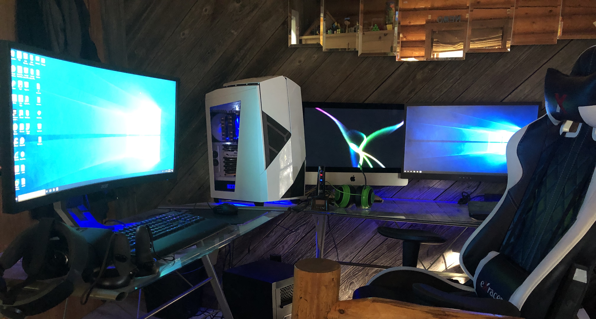
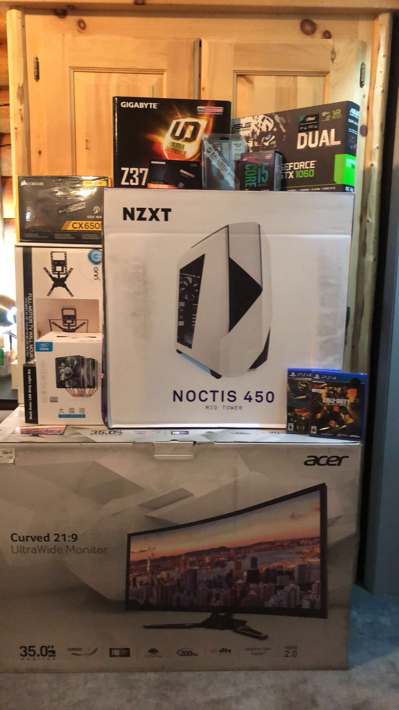
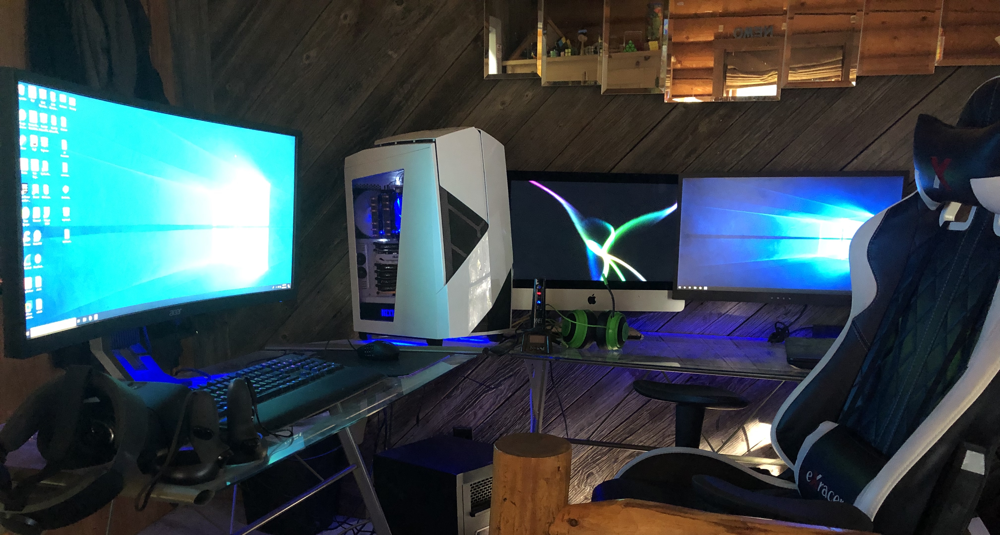
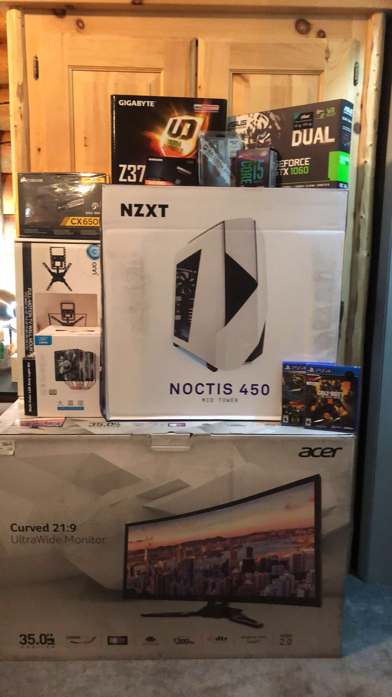

Email: owenbentz01@gmail.com
Phone: 612-701-4335
DoB: 01-24-2003
Objective
Highly motivated aspiring cybersecurity student seeking to leverage my skills and passion in a real-world, relevant job setting.
Email: owenbentz01@gmail.com
Phone: 612-701-4335
DoB: 01-24-2003
Highly motivated aspiring cybersecurity student seeking to leverage my skills and passion in a real-world, relevant job setting.
Casper, WY (2017-2019)
Cook, Kitchen Staff
Commitment to customer service and food industry
Casper, WY (2020-2025)
Package Delivery Personnel
Demonstrated reliability and time management skills.
My attraction to this field stems from my experience as the go-to IT support for family and friends. I genuinely enjoy helping others resolve their technical issues and find the troubleshooting process to be rewarding. My family has been a constant source of encouragement, wholeheartedly supporting my interests.
I'm a highly motivated aspiring cybersecurity enthusiast with a lifelong passion for technology. From building my first gaming rig at 14, to mastering network configurations, my passion for the digital world is unwavering.
While the majority of my knowledge is self-taught, driven by curiosity and desire to learn, I owe significant credit to my family (Mom: Jen, Dad: Brad, Brother: Riley), my Kelly Walsh CCNA teacher, Duane Reimer, and my Casper College CCNA instructor, Jeffrey Brewster, for their invaluable contributions. I am currently preparing to take the CCNA exam upon completion of my CCNA prep course at Casper College.
In my opinion, AI is a powerful tool with vast potential for automating tasks and enhancing various processes. I believe it is crucial to learn how to effectively utilize these tools while maintaining an awareness of their distinction from human-generated content. (In fact, this website was built using contributions from Gemini 2.0).


 




References available upon request.